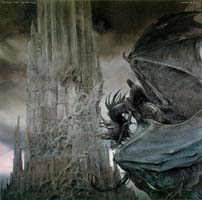

Forums galactiques > Taverne galactique : lieu de discussion informel > Taverne des âmes perdues.
| elisabeth bathory Réputation à la taverne : 102  02/07 ETU 00:16  | Score : 0 Détails Bienvenue dans la taverne des âmes perdues point de rencontre des poètes et de tout ceux qui ont au plus profond d'eux l'âme torturée et qui désirent exprimer leur coté sombre mème si je serai surement la seule à m'exprimer ici.
| ||
| Winston Réputation à la taverne : 209  02/07 ETU 01:07 | Score : 0 Détails L'ambassadrice de la "Star" rentre, ayant appris l'existence de cette salle.
<< M'accorderiez vous la permission d'afficher ce petit poème à l'entrée ? j'y ai tout de suite pensé quand j'ai entendu parler de ce nouvel endroit. >> Ophélie I Sur l'onde calme et noire où dorment les étoiles La blanche Ophélia flotte comme un grand lys, Flotte très lentement, couchée en ses longs voiles ... - On entend dans les bois lointains des hallalis. Voici plus de mille ans que la triste Ophélie Passe, fantôme blanc, sur le long fleuve noir; Voici plus de mille ans que sa douce folie Murmure sa romance à la brise du soir. Le vent baise ses seins et déploie en corolle Ses grands voiles bercés mollement par les eaux; Les saules frissonnants pleurent sur son épaule, Sur son grand front rêveur s'inclinent les roseaux. Les nénuphars froissés soupirent autour d'elle; Elle éveille parfois, dans un aune qui dort, Quelque nid, d'où s'échappe un petit frisson d'aile: - Un chant mystérieux tombe des astres d'or. II O pâle Ophélia! belle comme la neige! Oui, tu mourus, enfant, par un fleuve emporté! - C'est que les vents tombant des grands monts de Norwège T'avaient parlé tout bas de l'âpre liberté; C'est qu'un souffle, tordant ta grande chevelure, A ton esprit rêveur portait d'étranges bruits; Que ton coeur écoutait le chant de la Nature Dans les plaintes de l'arbre et les soupirs des nuits; C'est que la voix des mers folles, immense râle, Brisait ton sein d'enfant, trop humain et trop doux; C'est qu'un matin d'avril, un beau cavalier pâle, Un pauvre fou, s'assit muet à tes genoux! Ciel! Amour! Liberté! Quel rêve, ô pauvre Folle! Tu te fondais à lui comme une neige au feu: Tes grandes visions étranglaient ta parole - Et l'Infini terrible effara ton oeil bleu! III - Et le Poète dit qu'aux rayons des étoiles Tu viens chercher, la nuit, les fleurs que tu cueillis, Et qu'il a vu sur l'eau, couchée en ses longs voiles, La blanche Ophélia flotter, comme un grand lys. Arthur Rimbaud (1854 - 1891), Poésies (1895), Ophélie (1870). | ||
| elisabeth bathory Réputation à la taverne : 102 02/07 ETU 10:36 | Score : 0 Détails Ce poème est tres beau je ne le conaissait pas.
| ||
| Aruzan Réputation à la taverne : 36  02/07 ETU 14:26 | Score : 0 Détails Arhur Rimbaud : "Le dormeur du val"
C'est un trou de verdure où chante une rivière Accrochant follement aux herbes des haillons D'argent ; où le soleil, de la montagne fière, Luit: c'est un petit val qui mousse de rayons. Un soldat jeune, bouche ouverte, tête nue, Et la nuque baignant dans le frais cresson bleu, Dort ; il est étendu dans l'herbe sous la nue, Pâle dans son lit vert où la lumière pleut. Les pieds dans les glaïeuls, il dort. Souriant comme Sourirait un enfant malade, il fait un somme : Nature,berce le chaudement : il à froid. Les parfum ne font pas frissonner sa narine ; Il dort dans le soleil, la main sur sa poitrine Tranquille. Il a deux trous rouges au côté droit. Octobre 1870 | ||
| elisabeth bathory Réputation à la taverne : 102 02/07 ETU 14:37 | Score : 0 Détails moi aussi j'adore ce poème.
| ||
| elisabeth bathory Réputation à la taverne : 102 02/07 ETU 15:29 | Score : 0 Détails Il y a un poème de victor hugo que j'adore et je tenait a vous le faire lire.
A qui donc sommes-nous ? A qui donc sommes-nous ? Qui nous a ? qui nous mène ? Vautour fatalité, tiens-tu la race humaine ? Oh ! parlez, cieux vermeils, L'âme sans fond tient-elle aux étoiles sans nombre ? Chaque rayon d'en haut est-il un fil de l'ombre Liant l'homme aux soleils ? Est-ce qu'en nos esprits, que l'ombre a pour repaires, Nous allons voir rentrer les songes de nos pères ? Destin, lugubre assaut ! O vivants, serions-nous l'objet d'une dispute ? L'un veut-il notre gloire, et l'autre notre chute ? Combien sont-ils là-haut ? Jadis, au fond du ciel, aux yeux du mage sombre, Deux joueurs effrayants apparaissaient dans l'ombre. Qui craindre? qui prier ? Les Manès frissonnants, les pâles Zoroastres Voyaient deux grandes mains qui déplaçaient les astres Sur le noir échiquier. Songe horrible! le bien, le mal, de cette voûte Pendent-ils sur nos fronts ? Dieu, tire-moi du doute! O sphinx, dis-moi le mot ! Cet affreux rêve pèse à nos yeux qui sommeillent, Noirs vivants! heureux ceux qui tout à coup s'éveillent Et meurent en sursaut ! | ||
| Sigma Réputation à la taverne : 197  02/07 ETU 17:09 | Score : 0 Détails Très joli poèmes...toutefois, je ne vais pas manquer à la publication de ce poème de Charles Baudelaire
(de loin mon poète favori): UNE CHAROGNE Rappelez-vous l'objet que nous vîmes, mon âme, Ce beau matin d'été si doux: Au détour d'un sentier une charogne infâme Sur un lit semé de cailloux, Le ventre en l'air, comme une femme lubrique, Brûlante et suant les poisons, Ouvrait d'une façon nonchalante et cynique Son ventre plein d'exhalaisons. Le soleil rayonnait sur cette pourriture, Comme afin de la cuire à point, Et de rendre au centuple à la grande Nature Tout ce qu'ensemble elle avait joint; Et le ciel regardait la carcasse superbe Comme une fleur s'épanouir. La puanteur était si forte, que sur l'herbe Vous crûtes vous évanouir. Les mouches bourdonnaient sur ce ventre putride, D'où sortaient de noirs bataillons De larves, qui coulaient comme un épais liquide Le long de ces vivants haillons. Tout cela descendait, montait comme une vague Ou s'élançait en pétillant On eût dit que le corps, enflé d'un souffle vague, Vivait en se multipliant. Et ce monde rendait une étrange musique, Comme l'eau courante et le vent, Ou le grain qu'un vanneur d'un mouvement rythmique Agite et tourne dans son van. Les formes s'effaçaient et n'étaient plus qu'un rêve, Une ébauche lente à venir Sur la toile oubliée, et que l'artiste achève Seulement par le souvenir. Derrière les rochers une chienne inquiète Nous regardait d'un oeil fâché, Epiant le moment de reprendre au squelette Le morceau qu'elle avait lâché. - Et pourtant vous serez semblable à cette ordure, A cette horrible infection, Etoile de mes yeux, soleil de ma nature, Vous, mon ange et ma passion! Oui! telle vous serez, ô la reine des grâces, Apres les derniers sacrements, Quand vous irez, sous l'herbe et les floraisons grasses, Moisir parmi les ossements. Alors, ô ma beauté! dites à la vermine Qui vous mangera de baisers, Que j'ai gardé la forme et l'essence divine De mes amours décomposés! ___________________________________________________________ Les Fleurs du mal, Charles Baudelaire ___________________________________________________________ | ||
| Ashrad Réputation à la taverne : 1 02/07 ETU 17:19 | Score : 0 Détails J'aime beaucoup ce poème.
| ||
| Sigma Réputation à la taverne : 197 02/07 ETU 17:21 | Score : 0 Détails charmant n'est ce pas?
| ||
| Ashrad Réputation à la taverne : 1 02/07 ETU 17:21 | Score : 0 Détails Exelent.
| ||
| Morgoth Réputation à la taverne : 0  02/07 ETU 20:05 | Score : 0 Détails *Entre un personnage entierement enferme dans une armure noire, couverte d'inscriptions dans une langue oubliee.*
Je pense avoir ma place ici. Charmant poeme.(Je m'exscuse d'avance pour les fautes de frappe, j'ai un clavier anglais, et l'espace marche mal) | ||
| elisabeth bathory Réputation à la taverne : 102 03/07 ETU 09:42 | Score : 0 Détails Bienvenue nouveau visiteur il y a biensur une place pour vous ici si vous étes de ceux que la poésie émerveille.
Quand a votre poème Comandant Sigma c'est un des poèmes que je préfere, d'ailleur il aparait aussi dans le film de science fiction "Immortel" dont le réalisateur est un inconditionel de Baudelaire. | ||
| La F.F.C Réputation à la taverne : -31  03/07 ETU 09:47 | Score : 0 Détails c'est un poème de victor Hugo sue j'aime beaucoup aussi car il exprime la fin de satan et il s'intitule (Depuis quatre mille ans il tombait dans l'abîme)
Depuis quatre mille ans il tombait dans l'abîme Il n'avait pas encor pu saisir une cime, Ni lever une fois son front démesuré. Il s'enfonçait dans l'ombre et la brume, effaré, Seul, et derrière lui, dans les nuits éternelles, Tombaient plus lentement les plumes de ses ailes. Il tombait foudroyé, morne, silencieux, Triste, la bouche ouverte et les pieds vers les cieux, L'horreur du gouffre empreinte à sa face livide. Il cria : Mort ! - les poings tendus vers l'ombre vide. Ce mot plus tard fut homme et s'appela Caïn. Il tombait. Tout à coup un roc heurta sa main ; Il l'étreignit, ainsi qu'un mort étreint sa tombe Et s'arrêta. Quelqu'un d'en haut lui cria : - Tombe ! Les soleils s'éteindront autour de toi, maudit ! Et la voix dans l'horreur immense se perdit. Et pâle, il regarda vers l'éternelle aurore. Les soleils étaient loin, mais ils brillaient encore. Satan dressa la tête et dit, levant ses bras : - Tu mens ! - Ce mot plus tard fut l'âme de judas. Pareil aux dieux d'airain debout sur leurs pilastres Il attendit mille ans, l'oeil fixé sur les astres. Les soleils étaient loin, mais ils brillaient toujours. La foudre alors gronda dans les cieux froids et sourds, Satan rit, et cracha du côté du tonnerre L'immensité qu'emplit l'ombre visionnaire, Frissonna. Ce crachat fut plus tard Barabbas. Un souffle qui passait le fit tomber plus bas... (les fautes de frappe son faites exprès,c'est comme sa dans le poème original) | ||
| elisabeth bathory Réputation à la taverne : 102 03/07 ETU 09:57 | Score : 0 Détails J'aime bien ce poeme mais il est un peu trop répétitif... enfin ce n'est pas le mot mais je ne sait pas comment l'exprimer.
| ||
| La F.F.C Réputation à la taverne : -31 03/07 ETU 09:58 | Score : 0 Détails Oui mais il a un sens profond pour moi...c'est spécial
| ||
| elisabeth bathory Réputation à la taverne : 102 03/07 ETU 10:05 | Score : 0 Détails Je pense que chaque poème à un sens profond mème si il n'est pas toujours perçut par tout le monde certaines persones sont plus sensibles a un poème que d'autres, voila tout.
| ||
| La F.F.C Réputation à la taverne : -31 03/07 ETU 10:10 | Score : 0 Détails Ouo on voit que vous aimez cela
| ||
| Tiz Réputation à la taverne : 165  03/07 ETU 10:10 | Score : 0 Détails c'est vrai, tout est différent pour tout le monde...
au passage, j'adore le "(les fautes de frappe son faites exprès,c'est comme sa dans le poème original)" il n'y a aucune faute dans ce poème, que des licences poétiques, comme "encor" qui sert à faire une syllabe de moins pour faire un alexandrin ! | ||
| La F.F.C Réputation à la taverne : -31 03/07 ETU 10:16 | Score : 0 Détails oui mais je l'ai tirer d'un receuil que j'ai chez moi
(non non pas d'internet,sisi je le jure) et il est très vieux donc j'ai recopier de que j'ai vu (il appartenais a mon arrière arrière grand mère qui l'a hériter de quelqu'un,désoler de raconter ma vie) | ||
| stella Réputation à la taverne : -3  03/07 ETU 10:42 | Score : 0 Détails Votre vie est certe tres intéressante mais nous sommes dans un jeu RP
|
Forums galactiques > Taverne galactique : lieu de discussion informel > Taverne des âmes perdues.